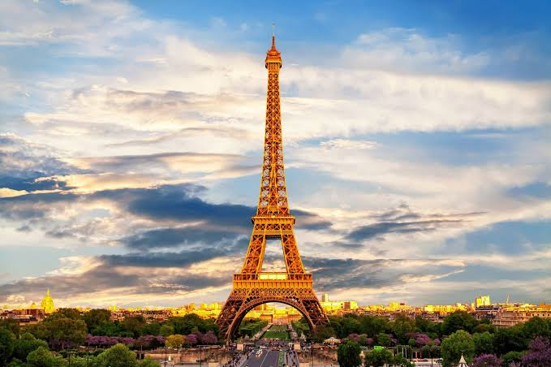

Asiphe Nombeleko

 I would like to visit Paris some day because of the romantic atmosphere it exudes. I would like to customise a padlock with my initials and lock it on the Eiffel Tower .It is known worldwide for the Louvre Museum, Notre-Dame cathedral, and the Eiffel tower. It has a reputation of being a romantic and cultural city. The city is also known for its high-quality gastronomy and the terraces of its cafés. it's a mix of the city's aesthetic beauty, the abundance of romantic restaurants, and the magical settings we've seen so many times in movies.
I would like to learn French because about 45% of modern English words are of French origin and along with english French remains an influential language in the diplomatic world.
| English | French | Hello | Bonjour |
|---|---|
| How are you? | comment allez-vous |
| Food | Nourriture |
| Goodbye | Au revoir |
| Nice to meet you | Ravi de vous rencontrer |

The Iziko Slave Lodge is one of Cape Town's oldest buildings.The Slave Lodge housed the slaves who belonged to the Dutch East India Company (VOC). These slaves worked for the VOC and were never sold. The Slave Lodge was built in 1679, making it the second oldest existing colonial structure of the Cape Colony, today known as Cape Town. This building was changed many times and it is unclear how much of the existing building dates from the slave period.
 Built between 1666 and 1679 by the Dutch East India Company, it's the oldest existing colonial building
in South
Africa
The Castle acted as local headquarters for the South African Army in the Western Cape, and today houses
the
Castle Military Museum
and ceremonial facilities for the traditional Cape Regiments.
Built between 1666 and 1679 by the Dutch East India Company, it's the oldest existing colonial building
in South
Africa
The Castle acted as local headquarters for the South African Army in the Western Cape, and today houses
the
Castle Military Museum
and ceremonial facilities for the traditional Cape Regiments.
The City Hall has become a central venue for creative and cultural events such as art exhibitions and concerts. One of these events includes the City Hall Sessions.City Hall is a busy place — it's where citizens come to interact with government to apply for licenses, pay fines, and attend town hall meetings. The mayor of Cape Town, Thomas Ball, laid the corner stone of the City Hall on 29 August 1900, but the hall was only opened in 1905. It was designed by architects Reid and Green from Johannesburg and was built in Italian Renaissance style, one of the last major Victorian buildings to be erected in Cape Town